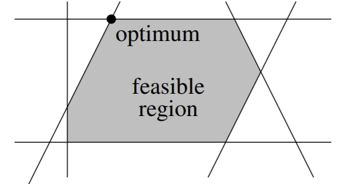

Optomization¶
Intro¶
Let’s say Apple makes two products (iPhone and iPad) using two machines (A and B), both of which can produce the iPhone or iPad. It takes machine A 50 minutes to make one iPhone, and 30 minutes to make one iPad. It takes machine B 24 minutes to make 1 iPhone and 33 minutes to make 1 iPad. Let’s say the company goal is to produce 45 iPhones and 5 iPads by the end of the week. Here’s the catch, though: available processing time on machine A is 40 hours total, and for B it is 35 hours total.
So given that hunk of information, we try to answer this: how many iPhones and iPads should Apple produce by the end of the week to maximize the total number of units (iPhones and iPads) produced?
More generally, if you have some controllable weights \(w\), how can you “tune” the individual elements in \(w\) to optimize some quantity? Let’s say you’re a rave DJ: if each weight corresponded to a setting on a DJ board, but a few of the knobs and dials are broken or distorted, what tunings do you set to generate the most happiness out of the crowd?
You might have seen this kind of problem in your high school algebra class. It is an optomization problem with linear constraints, and has many real-world applications. In this chapter, we focus on the details behind these kinds of optomization problems. There are a few core types of these problems, along with associated algorithms to solve them. It is by no means a simple subject, but let’s try to break it down here.
Optomization Problems¶
There are two basic kinds of optimization problems: constrained and unconstrained.
Let’s start with unconstrained optomization. Generally, this problem involves finding a weight vector \(w\) that minimizes (or maximizes) some continuous objective function \(f(w)\). We also hope that \(f\) is smooth as well: this means that \(f\) AND its gradient \(\nabla f\) is continuous.
A global minimum of \(f\) is denoted as \(\underset{w}{\arg\min} f(w)\): in other words, \(f(w) \le f(v)\) for all \(v\). A local minimum of \(f\) is a vector \(w\) such that \(f(w) \le f(v)\) AROUND \(w\): in a tiny ball centered around \(w\).
Usually, finding a local minimum is easy, but finding the global minimum is generally pretty hard or even impossible. However, the exception for this comes when we have a convex function: a function such that for every \(x, y \in \mathbb{R}^d\), the line segment connecting \((x, f(x))\) to \((y, f(y))\) does not go below any \(f(z)\) for any \(z \in [x,y]\).
The sum of a bunch of convex functions is still convex: therefore, since the risk function is just a sum of a bunch of convex loss functions, the perceptron risk function is convex. However, it is also non-smooth because of the linear constraints it must account for.
In support vector machines, we are minimizing \(||w||^2\): since this is a quadratic program, it is convex. However, it is not unconstrained, of course.
The reason we like convex functions because on a closed convex domain it must have one of three possibilities:
No minimum (goes to -\(\infty\))
One local minimum, which must be the global minimum
Multiple connected local minima: all local minima are global minima.
Remember that the “green region” we saw with the perceptron risk function indicates that it satisfies the third bullet point: multiple global minima (weight vectors) exist that all linearly separate the data and give global risk \(R(w) = 0\).
Unfortunately, many applications will result in nonconvex objective functions, and algorithms may just have to settle for local minima. For example, neural network risk functions usually have LOTS of local minima.
Algorithms to Optimize Smooth Functions¶
If our objective function is smooth, then gradient descent is very nice in optomization. There is batch gradient descent, and stochastic gradient descent. However, gradient descent also exists with line search: we are dynamically looking for a minimum at each step, changing step sizes at each iteration.
Another option for optomization is Newton’s method. It looks at the Hessian matrix of \(f\), which contains the second-order derivatives of \(f\). However, the issue is this require a \(d \times d\) matrix for \(d\) features. So if \(d\) is very large, this becomes space-inefficient and intractable very fast.
There also exists a method called the nonlinear conjugate gradient method, which includes line-search methods as part of its algorithm. We won’t talk too much about this in this book, but it is kind of interesting as an algorithm for small neural networks and logistic regression.
Algorithms to Optimize Nonsmooth Functions¶
Gradient descent is also popular with this. Another algorithm that exists is called BFGS. Such algorithms find a local minimum by the familiar walking-downhill procedure: a general global-minimum finder just doesn’t exist yet.
Line search is like gradient descent, except it implements the process of dynamically trying to find the minimum in the gradient search direction at each iteration. We find a local minimum in the search direction by utilizing a lower-dimensional curve. A few well-known line search methods are the secant method, the Newton-Raphson method, and direct line search.
Constrained Optimization¶
Our goal in constrained optimization is to find \(w\) that minimizes/maximizes \(f(w)\), subject to constraints \(g(w) = 0\) where \(f, g\) are usually both smooth. If \(g\) is a scalar function (scalar output), then we know \(g(w) = 0\) is an isosurface with isovalue 0. However, if \(g\) is vector-valued, then \(g(w) = 0\) is an intersection with multiple isosurfaces.
The algorithm for solving such problems generally involves something called Lagrange multipliers: they transform a smooth constrained optimization problem and transform it into an unconstrained one. But this is generally beyond the scope of this book.
Linear Programs¶
A linear program is characterized by a linear objective function and a set of linear constraints. The key fact here is that these constraints might be inequalities. Now, our goal is to find a weight vector \(w\) that optimizes \(f(w) = c \cdot w\), subject to a set of linear constraints, which can be concisely represented as \(Aw \le b\).
Note
\(Aw\) and \(b\) are vectors: for a vector \(v_1\) to be \(\le v_2\), all elements in \(v_1\) must be \(\le\) their corresponding elements in \(v_2\).
\(A\) is a \(\mathbb{R}^{n \times d}\) matrix, \(b \in \mathbb{R}^n\): this represents \(n\) linear constraints, one for each data point. We can just represent this as \(A_iw \le b_i\) for all \(i \in [1, n]\), where \(A_i\) is row \(i\) of our matrix \(A\), representing a data point.
Let’s visualize a linear program and its constraints in 2 dimensions. Remember that a constraint basically shades a section of the (2D) space that our solution is allowed to be in. So if we have \(n = 6\) constraints, our feasible region, the “green region” we saw earlier in the perceptron method where our optimal solution is allowed to be in (since it satisfies all constraints), might look like:
{kind=link}
The feasible region is a specific version of the convex polytope that is produced by the set of all \(w\) that satisfy all constraints. A polytope is a polygon in \(n\) dimensions, usually created by hyperplane constraints. The feasible region does not have to be bounded. However, the feasible region of a linear program is always convex. A point set \(P\) is convex if for any 2 points \(p, q \in P\) the line segment that connects \((p, q)\) will be entirely made of points in \(P\) (line lies entirely in \(P\)).
The optimum of a linear program is the point in the feasible region that is furthest in the direction \(c\). Since \(c\) is a direction, we want the point in our region that goes as far in that direction as possible. Another way to think about it: the hyperplane that is orthogonal to \(c\), when shifted up or down, will intersect the feasible region at exactly one point: this is the optimum.
The optimum will achieve equality for some constraints, but not most. These constraints that achieve equality are called active constraints of the optimum. Basically, all constraint hyperplanes that pass through the optimum are active. In SVMs, the sample points that induce the 2 active constraints are the support vectors.
Note there can also be multiple or even infinite optimum solutions, depending on \(c\)’s direction.
Note that any feasible point \((w, \alpha)\) gives a linear classifier for linearly separable data. We don’t really prefer one point over another if both of them are optimal: all equally good.
Generally, weight vector points inside the feasible region are better than those on the boundary in terms of linear classifiers, since such resulting hyperplanes don’t touch sample points.
A very important thing to note is that the data are linearly separable iff the feasible region is not the empty set. Note that hard-margin SVM feasible regions are a lot easier to visualize than soft-margin SVMs, the latter of which allow for a feasible region with non-linearly-separable data.
Algorithms for Linear Programming¶
There exist some algorithms for linear programming that might be interesting to check out:
Simplex algorithm: just walk from vertex to vertex in the feasible region, in the direction of optimiziation for \(f\), until it can’t anymore.
Interior Point methods
Note that although linear program solving algorithms can find a linear classifier, they cannot find a maximum margin classifier. We need something more powerful.
Quadratic Programming¶
In quadratic programming, our objective function is now quadratic, and usually is assumed as convex. We also have the same set of linear inequalities we saw in linear programming. Now, our goal is to find weight vector \(w\) that minimizes \(f(w) = w^TQw + c^Tw\), still subject to the same linear constraints \(Aw \le b\). Note \(Q\) is a symmetric positive definite matrix: this means that \(w^TQw \ge 0\) for all \(w \neq 0\).
The great thing about quadratic programming is that they only have one local minimum: therefore, this must be the global minimum. So there’s only one solution as long as \(Q\) is positive definite (and the feasible region is not empty).
Note
Things get really bad if \(Q\) is indefinite- so we’ll assume throughout the book that \(Q\) is positive definite or at least positive semi-definite.
Of course, one example of quadratic programming is in the maximum margin classifier, where our objective function is minimizing \(||w||^2\)$.
So let’s say we have a plot of a quadratic objective function (where \(Q\) is positive definite). Say we have some feasible region in this plot. The goal, as always, is to find the point in the feasible region that minimizes the objective function. Visually, we want the point in the feasible region that is closest to the origin.
A hard-margin SVM will always have (at least) two active constraints: one for class C and one for class D (not in C). Then, we have two support vectors.
Algorithms for Quadratic Program¶
Many algorithms also exist for solving quadratic programs:
Simplex-like algorithms
Sequential minimal optimization (SMO)
Coordinate descent